1968년에 나온 영화다. 컴퓨터 그래픽이라는 말도 없던 때다. 그런데 《2001: 스페이스 오디세이》의 우주선과 별은 지금 4K 화면에 띄워도 흐릿하지 않다. 58년이 지났는데도 그렇다.
이유를 찾으면 결국 필름을 다루는 방식으로 간다. 무엇으로 찍었는지부터 보는 게 순서다.
무엇으로 찍었나
본편은 이스트만 컬러 네거티브 50T, 타입 5251 로 찍었다. 텅스텐 밸런스에 감도 ASA 50 이다. 카메라는 Super Panavision 70, 필름은 65mm 5퍼프, 촬영감독은 제프리 언스워스였다. 현상은 런던 서부 웨스트드레이턴의 테크니컬러 랩에서 했다.
촬영 사양
- 필름 · Eastman Color Negative 50T, 타입 5251 (텅스텐, ASA 50)
- 규격 · 65mm 5퍼프 네거티브, 70mm 상영
- 카메라 · Super Panavision 70
- 촬영 · 제프리 언스워스
- 현상 · 테크니컬러 런던
5251 은 1962년에 나와 1968년에 100T 짜리 5254 로 넘어간 스톡이다. 촬영 기간이 1965년부터 1967년까지였으니 시기가 맞는다.
감도 50 이라는 숫자를 눈여겨볼 만하다. 필름은 느릴수록 입자가 곱다. 65mm 라는 큰 면적에 고운 입자를 담아 두었으니, 뒤에서 복사를 몇 번 거치더라도 버틸 여유가 남는다. 큰 네거티브와 느린 필름, 그리고 곧 이야기할 복사 방식이 같은 방향으로 작동했다.
합성할 때마다 화질이 깎이던 시절
그때 합성은 이렇게 했다. 전경과 배경을 따로 찍는다. 그 필름들을 광학 프린터에 걸고 다시 촬영해 한 화면으로 합친다.
문제는 이 과정이 곧 복사라는 데 있다. 필름을 복사하면 입자가 굵어지고 대비가 뭉개진다. 한 번이면 몰라도, 화면에 들어갈 요소가 여럿이면 여러 번 거친다. 거칠 때마다 조금씩 나빠진다. 세대 손실이라고 부른다.
그래서 당시 SF 영화의 우주선 장면은 앞뒤 장면보다 유독 지저분했다. 합성한 컷만 화질이 떨어지니 눈에 띄었다.
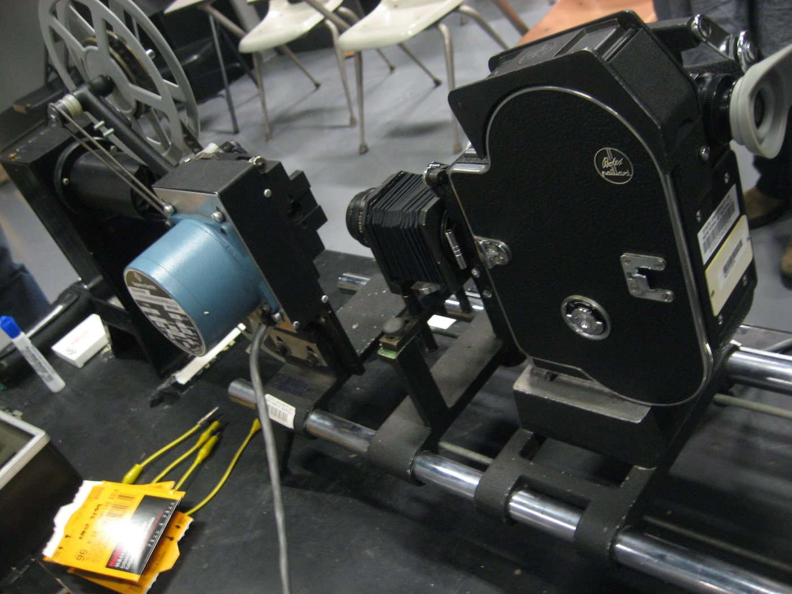
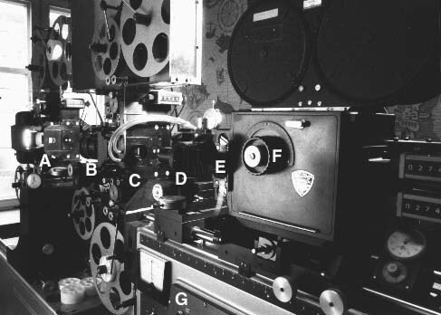
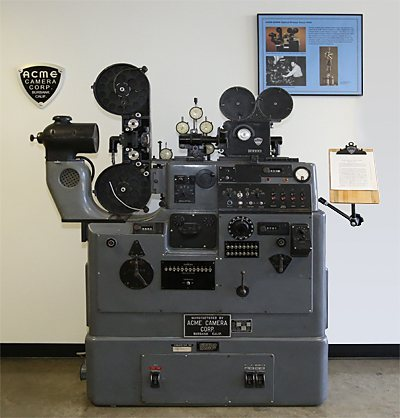
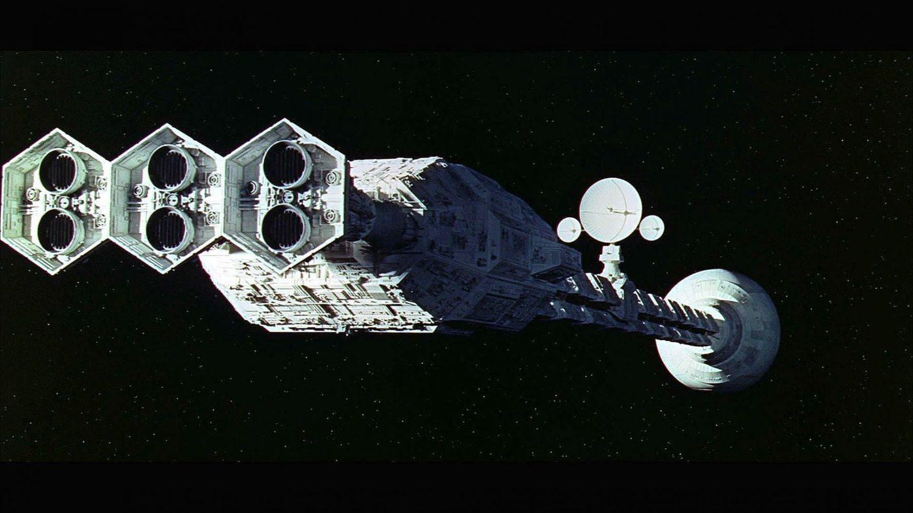
방법 하나. 같은 필름에 여러 번 노출한다
《2001》 제작진은 일부 장면을 아예 복사 없이 만들었다. 원본 네거티브 한 통에 여러 번 나눠 노출하는 방식이다.
먼저 배경이 들어갈 자리를 가린 채 우주선 모형을 찍는다. 필름을 정확히 시작 지점까지 되감는다. 이번에는 우주선 자리를 가리고 별이나 행성을 찍는다. 카메라 움직임을 똑같이 반복하는 장치를 써서, 서로 다른 요소가 한 장의 원본 필름 위에 정확히 겹치게 했다.
배경이 움직이는 장면도 마찬가지였다. 디지털 합성이 없으니 애니메이션처럼 한 프레임씩 위치를 옮겨 가며 찍었다.
위험한 방법이다. 노출이나 위치가 조금만 어긋나면 앞서 찍어 둔 것까지 통째로 버려야 한다. 실제로 같은 장면을 몇 번씩 다시 찍었다.
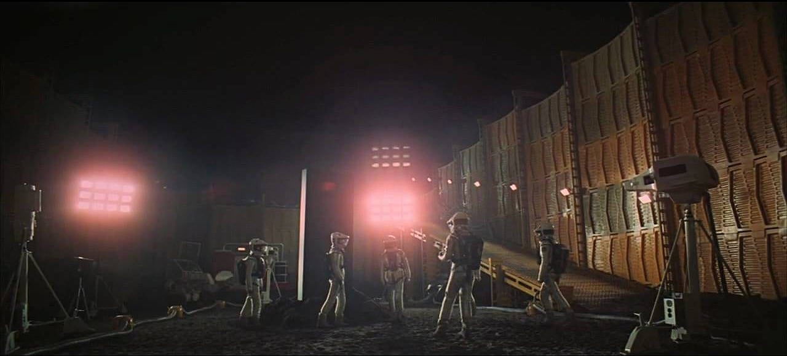
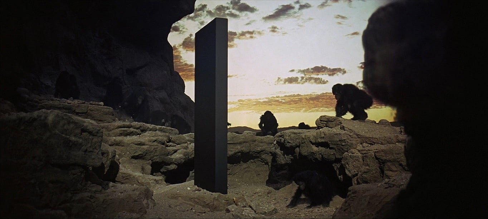
이때 스크린에 건 배경은 8×10 인치 엑타크롬 슬라이드였다. 아프리카 현지에서 대형 카메라로 찍어 온 원본이다. 작게 찍어 확대하면 배경만 뭉개지니, 아예 큰 판으로 찍어 왔다.
문제는 열이었다. 그만한 화면을 채우려면 광원이 강해야 하는데, 그 열에 슬라이드의 마젠타 층이 벗겨졌다. 수랭식 아크등을 쓰고 슬라이드를 내열 유리에 끼워 해결했다.
별 배경은 필름으로만 만들지 않았다. 금속판에 구멍을 뚫어 뒤에서 빛을 비추기도 했고, 에어브러시로 그린 그림을 애니메이션 스탠드에 올려 찍기도 했다.
세트도 같은 태도로 만들었다. 무중력 장면을 찍으려고 지름 11 미터짜리 원형 세트를 실제로 회전시켰다. 배우가 벽을 딛고 천장까지 걸어 올라가는 화면은 어떻게 찍었을까. 세트를 돌렸다. 찍을 수 있는 것은 최대한 찍었고, 그래서 나중에 합칠 것이 줄었다.
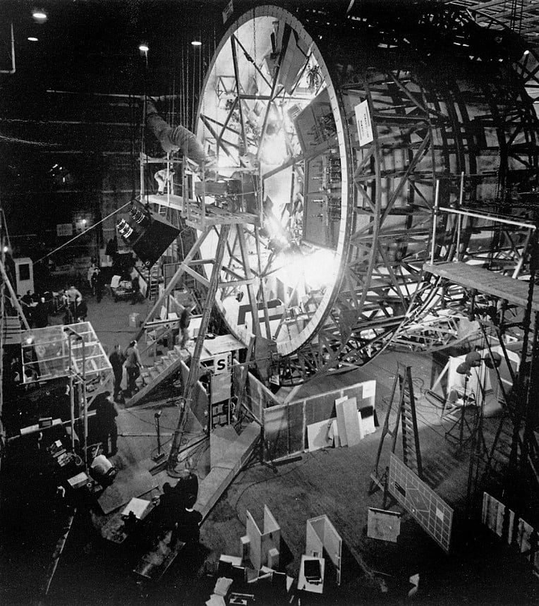
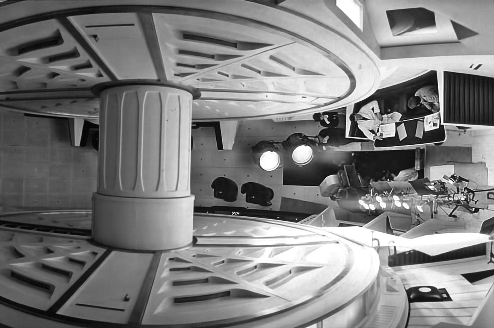
방법 둘. 복사를 아예 다르게 한다
여기서 흔히 오해가 생긴다. 《2001》이 복사를 하지 않아서 깨끗하다는 이야기가 도는데, 사실이 아니다.
특수 촬영 효과를 맡은 더글러스 트럼불이 직접 밝힌 숫자가 있다. 영화 속 숏의 절반 이상이 복사본이었다.
복사는 했다. 복사하는 길을 바꿨을 뿐이다. 컬러 필름을 컬러 그대로 복사하지 않고, 오리지널 컬러 네거티브에서 흑백 3색 분리 마스터를 떴다. 빨강, 초록, 파랑을 각각 흑백 필름 세 장에 나눠 담는 방식이다. 이걸 바이팩 카메라 프린터에 걸어 합쳤다.
트럼불은 이렇게 적었다.
우리는 모든 복사를 흑백 3색 분리 마스터로 하기로 했다. 숏을 합치는 데 컬러 인터포지티브는 한 장도 쓰지 않았다. 입자가 늘지 않고 높은 화질을 유지할 수 있었던 것은 주로 이 때문이라고 생각한다.
더글러스 트럼불, American Cinematographer 1968년 6월호
말로는 잘 와닿지 않는 방식이다. 다행히 같은 원리를 100년 전에 쓴 사람이 있다. 러시아의 사진가 프로쿠딘고르스키는 한 장면을 빨강, 초록, 파랑 필터로 세 번 나눠 흑백 유리원판에 담았다. 세 장을 다시 겹치면 컬러 사진이 나온다.
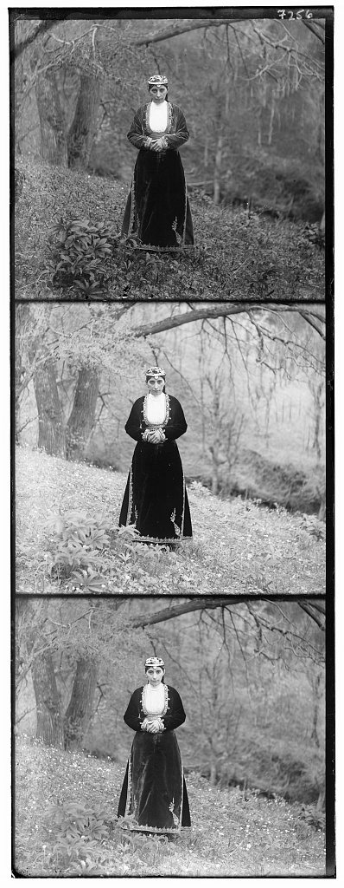
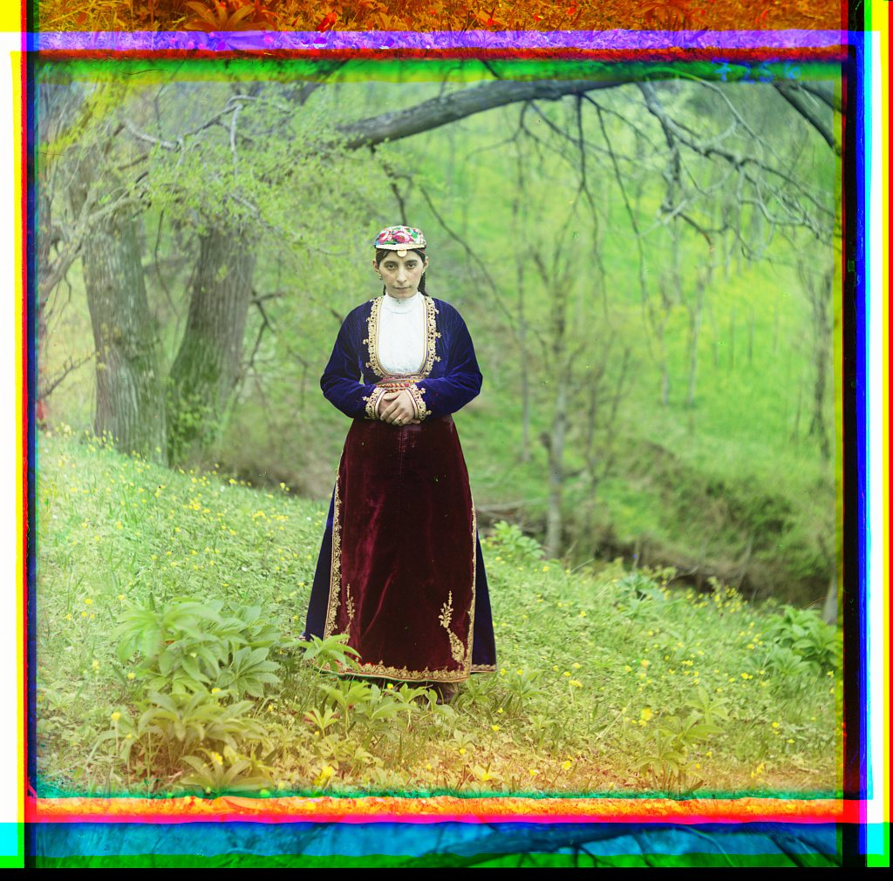
《2001》 제작진이 한 일이 이것이다. 다만 규모가 달랐다. 유리원판 세 장 자리에 흑백 영화 필름 세 통이 들어갔고, 사진 한 장 자리에 숏 하나가 통째로 들어갔다.
당시 컬러 인터포지티브는 한 세대 거칠 때마다 입자가 눈에 띄게 늘었다. 흑백 필름은 그렇지 않았다. 색을 세 장으로 나눠 흑백으로 다루면, 복사를 여러 번 해도 원본에 훨씬 가깝게 남는다. 품이 세 배로 들지만 화질은 지켰다.
합칠 때 쓴 것이 바이팩 프린터다. 필름 두 통을 한 게이트에 겹쳐 통과시키는 장치다. 한쪽이 마스크 역할을 하면서 다른 쪽의 상만 통과시킨다.
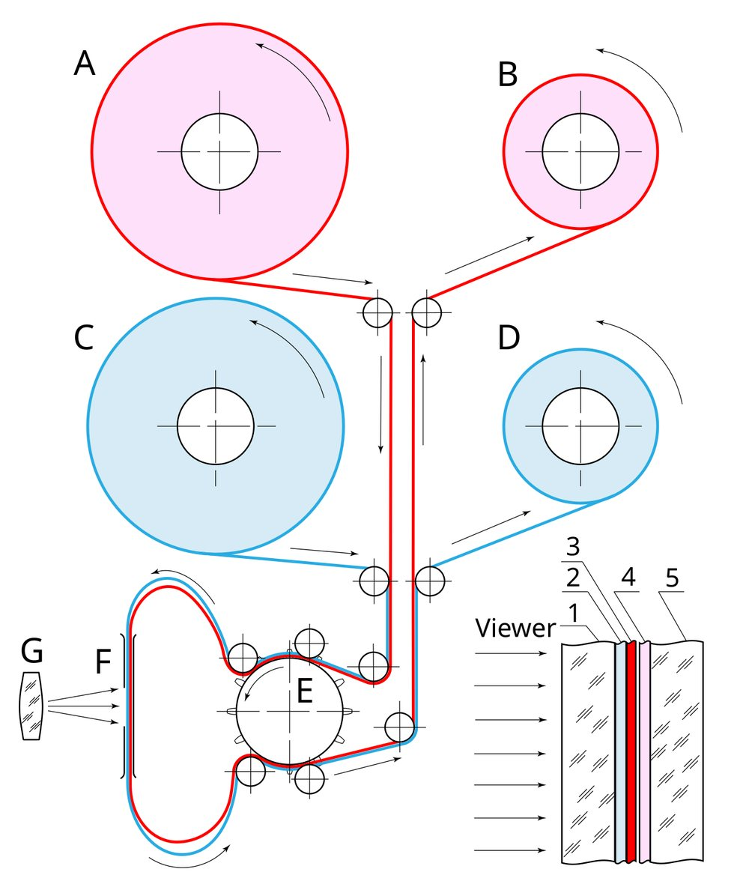
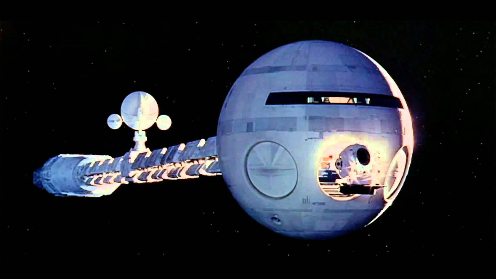
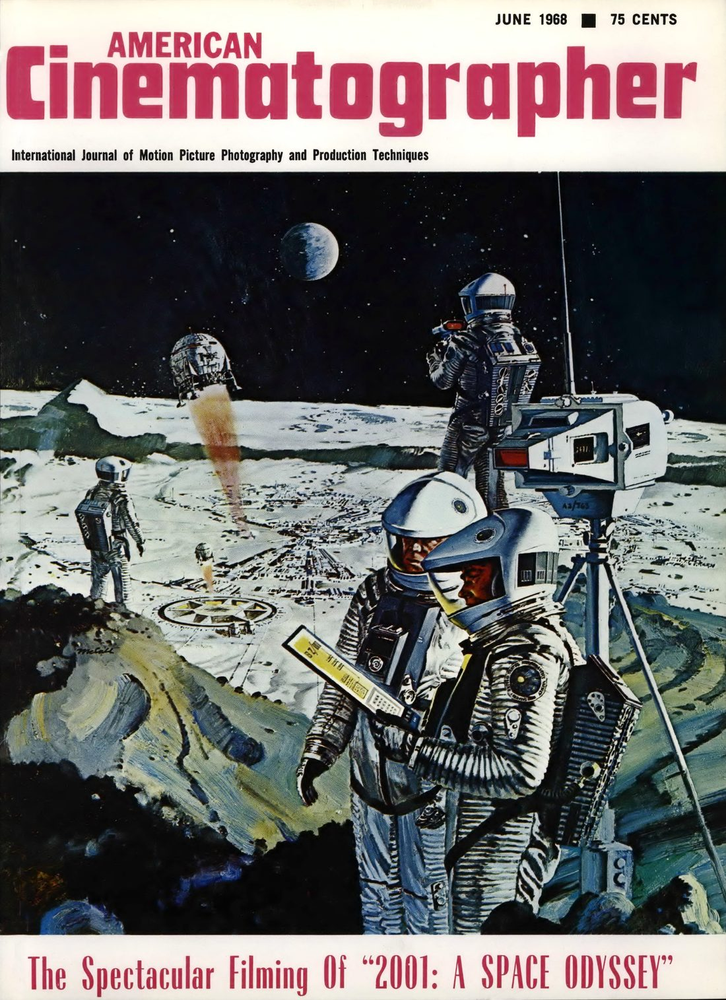
빛의 벽을 만든 장치
영화 끝의 스타게이트 장면은 이 중 어느 방법으로도 만들 수 없었다. 화면을 가득 채우고 끝없이 밀려오는 빛의 통로다. 트럼불은 그걸 위한 장치를 직접 만들었다.
슬릿스캔이라고 부른다. 원리는 이렇다. 뒤에서 빛을 넣은 그림판 앞에 좁고 긴 틈을 하나 세운다. 카메라 셔터를 열어 둔 채로 카메라를 그 틈 쪽으로 밀면서 찍는다. 한 프레임을 찍는 동안 틈을 지나온 빛이 필름 위에 길게 늘어나 선이 된다. 이걸 한 프레임씩, 위치를 조금씩 바꿔 가며 반복한다.
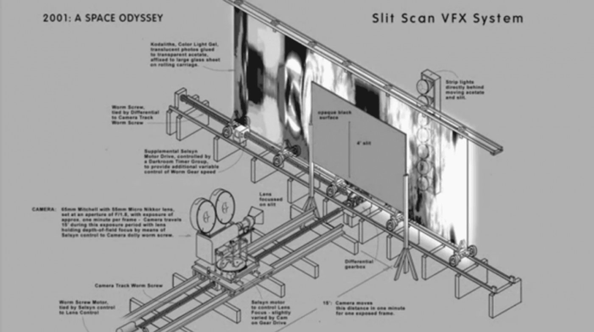
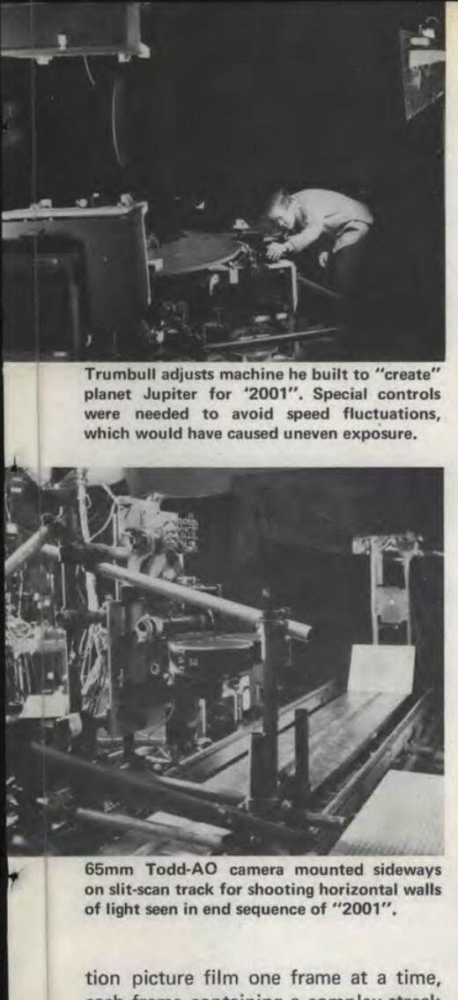
한 프레임에 몇 초씩 걸렸다. 장면 전체를 얻는 데 몇 달이 들었다. 그렇게 나온 것이 이 화면이다.
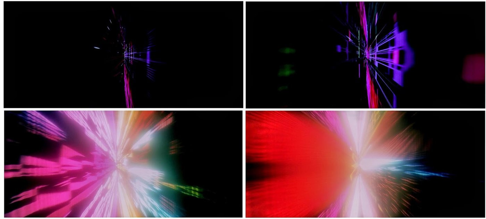
그 밖에 겹쳐 놓은 것들
화질은 이 두 가지만으로 만들어지지 않았다.
화질을 지킨 조건들
- 65mm 네거티브 · 일반 35mm보다 담기는 정보량 자체가 다르다
- 프런트 프로젝션 · 기계로 제어되는 카메라를 써서 실사 전경과 고해상도 배경을 한 화면에 붙였다
- 프레임별 매트 작업 · 가릴 자리를 한 프레임씩 손으로 만들었다
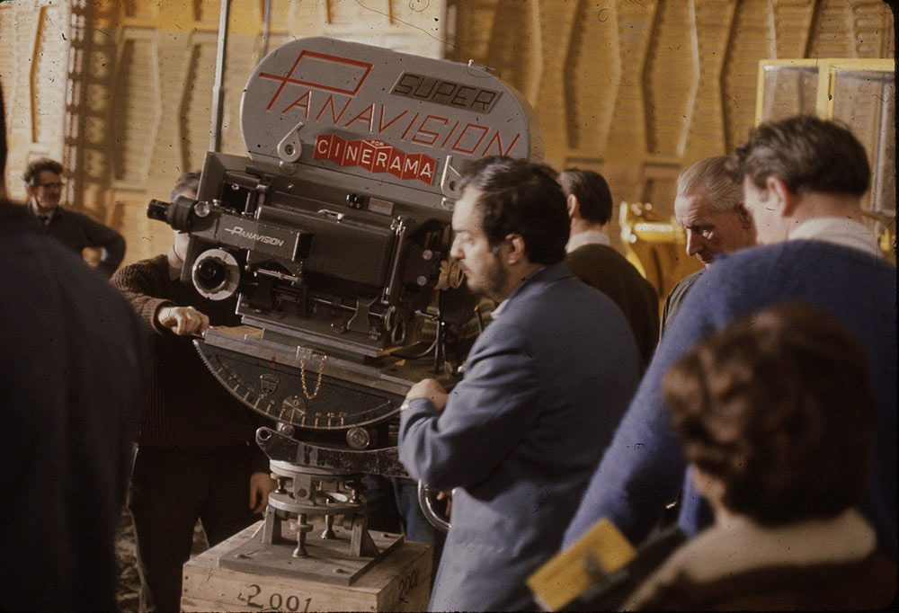
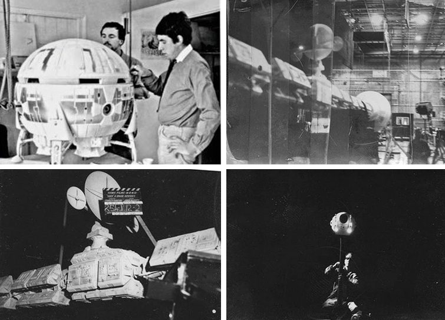
목표는 하나였다. 합성한 장면도 그냥 찍은 장면처럼 보이게 하는 것. 한 세대도 거치지 않은 것처럼 보이는 화면이다.
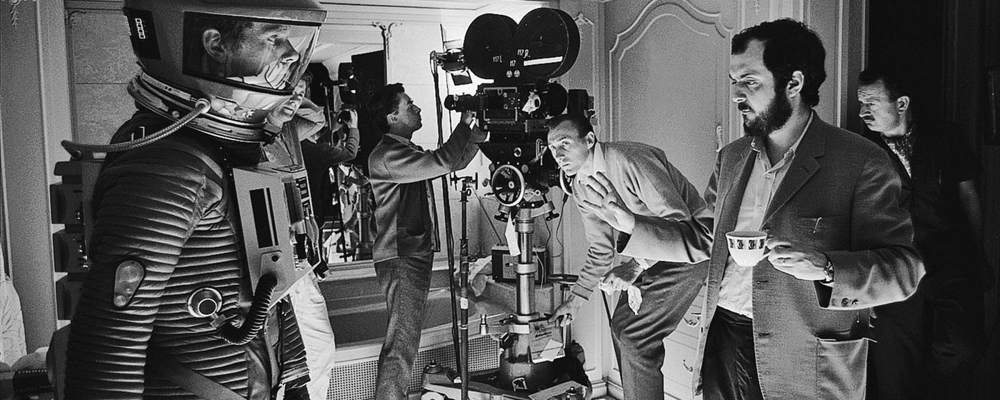
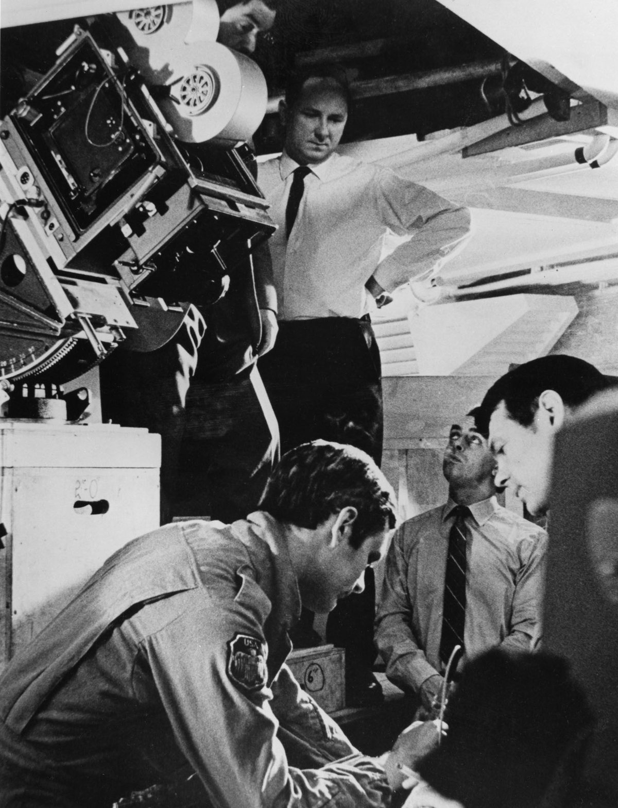
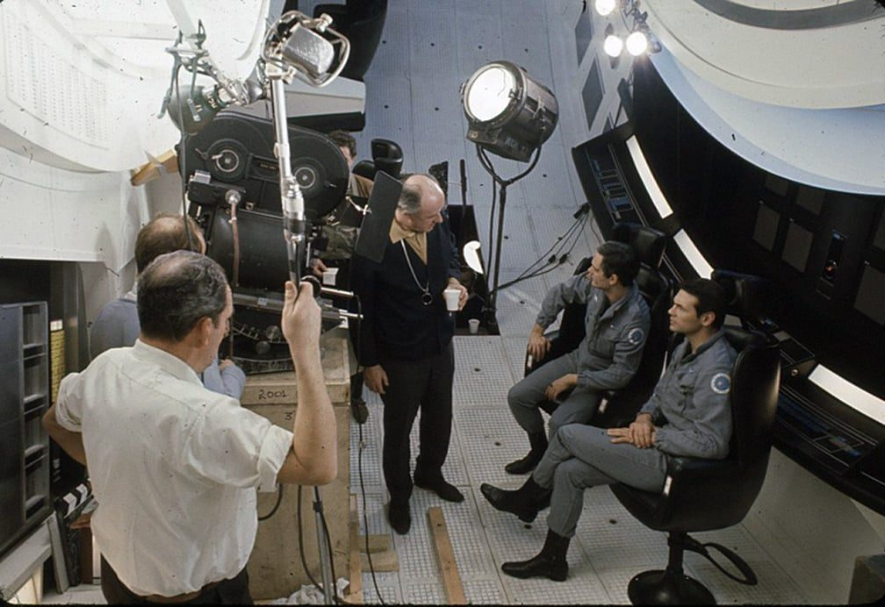
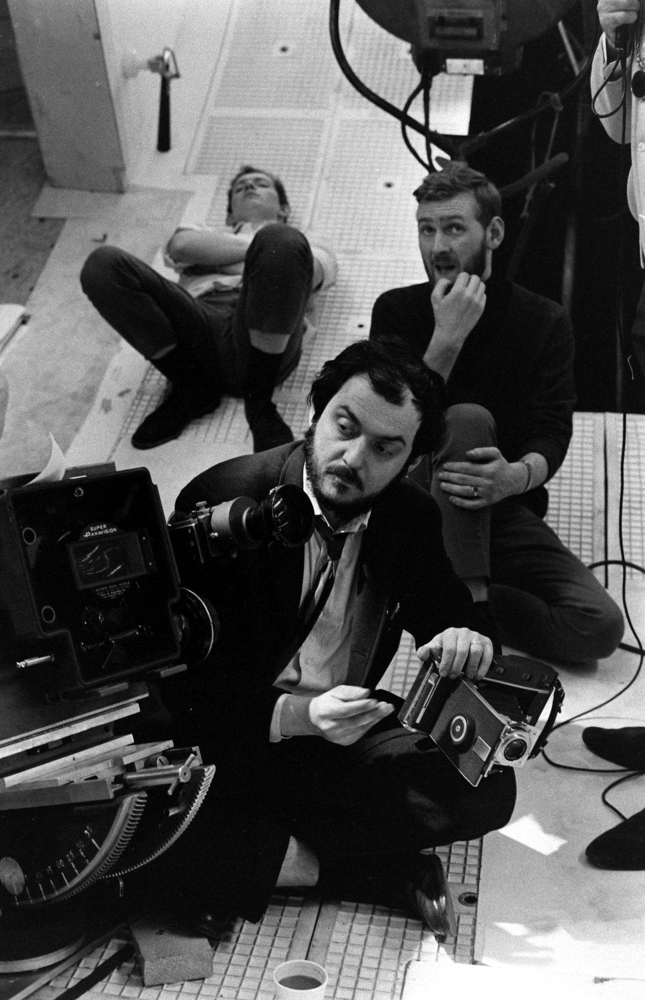
이 작업으로 큐브릭은 1969년 41회 아카데미에서 특수시각효과상을 받았다. 그가 개인 자격으로 받은 유일한 오스카다. 시상식에는 나오지 않았고 다이앤 캐럴과 버트 랭커스터가 대신 받았다.
그래서 4K 는
정확히 말하면 4K 는 디지털 화면의 픽셀 규격이다. 이 영화는 65mm 필름으로 찍혔고, 필름에는 픽셀이 없다. 두 단위는 애초에 서로 다른 것을 잰다.
2018년에 나온 4K 판이 어떻게 만들어졌는지 보면 관계가 분명해진다. 65mm 오리지널 카메라 네거티브를 8K 로 스캔한 다음 4K 로 줄였다. 크리스토퍼 놀란과 촬영감독 호이터 판 호이테마가 감수했다.
작업은 네거티브를 손으로 닦고 오래된 접합부를 걷어내는 데서 시작했다. 그해 결과물은 두 갈래로 나왔다. 하나는 디지털 손질을 하지 않은 70mm 극장 프린트고, 다른 하나는 이 8K 스캔에서 나온 4K HDR 마스터다. 둘 다 효과를 다시 만들거나 편집을 손보지는 않았다.
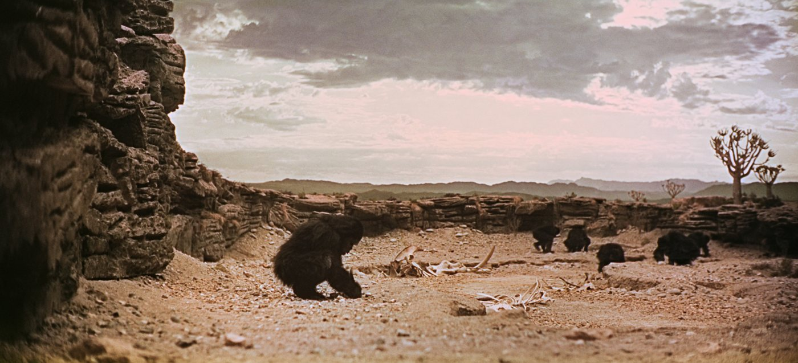
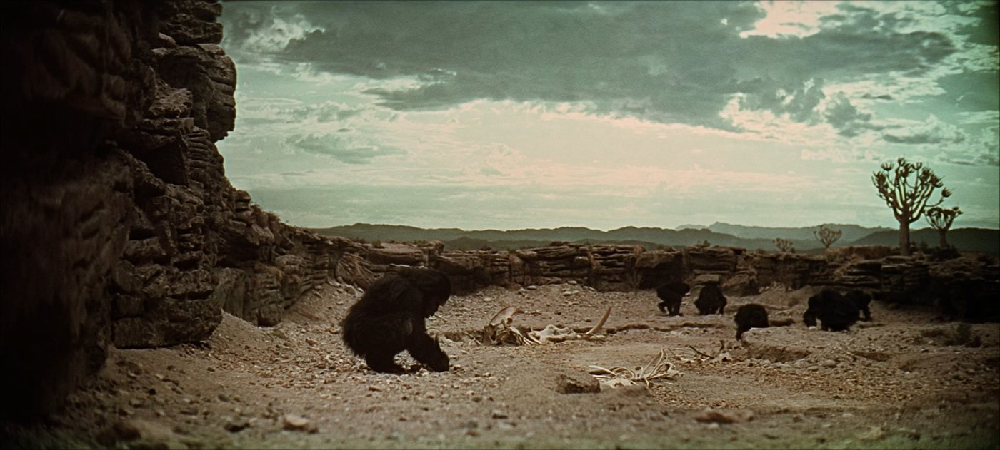
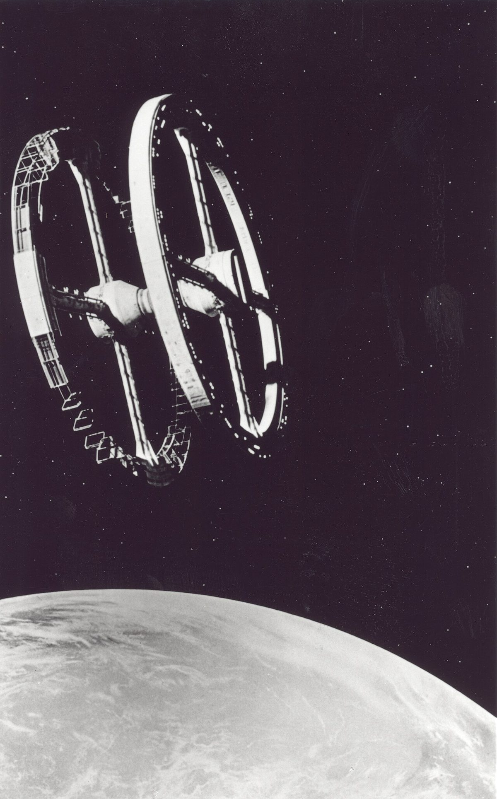
4K 가 필름의 한계가 아니었다. 필름에 담긴 것이 그보다 많았다.
58년 전에 큰 네거티브에 찍어 두고, 복사할 때 입자가 늘지 않는 길을 골라 둔 덕이다. 그때는 4K 라는 말이 없었다.
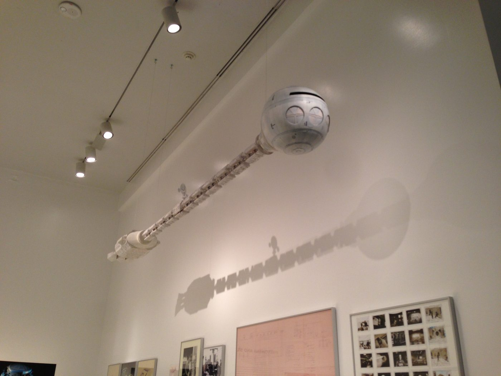